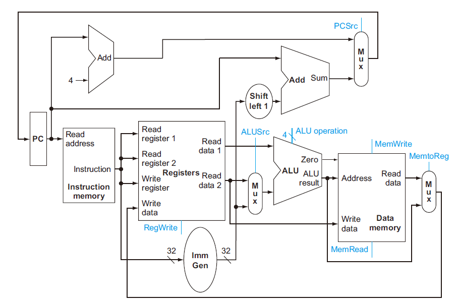

实验0: CPU初步设计与程序执行过程
1. 实验目的
-
回顾单周期CPU数据通路与控制器设计过程
-
回顾程序执行过程
-
为之后搭建流水线CPU打下基础
2. 实验环境
-
HDL：Verilog、SystemVerilog
-
IDE：Vivado
-
开发板：NEXYS A7
3. 实验原理
3.1 概述
单周期CPU主要特征是在一个周期内完成一条指令，也就意味着其CPI(cycle per instruction)是1。考虑到不同的指令都需要在一个周期内完成，因而单周期CPU时钟频率是以执行最慢的那条指令作为基准，这也是单周期CPU最大的缺陷之一。
我们可以把单周期CPU分成数据通路和控制单元两个模块，本次实验将回顾这两个模块的设计与结合过程。
3.2 程序执行流程阶段
为了之后能和流水线CPU进行衔接，我们把单周期CPU数据通路划分成5个阶段(stage):
-
instruction fetch (IF)
-
instruction decode (ID)
-
execution (EX)
-
memory access (MEM)
-
register write back (WB)
3.3 数据通路图

具体的设计要点参见计算机系统Ⅰ实验10的实验指导书。
3.4 控制单元
控制单元，也称译码器，它的作用是解码指令，发出信号，告诉Datapath应该执行什么操作。其设计过程主要包括对指令格式的解析，与相应控制信号的设计。表1和表2列出了参考的控制单元信号设计，大家也可以自行设计控制信号。
| 信号线 | 含义 | 1'b0 | 1'b1 |
|---|---|---|---|
| reg_write | 写寄存器 | 不写回 | 写回 |
| alu_src_b | ALU B口的数据来源 | 数据来自立即数imm | 数据来自Reg[rs2] |
| mem_write | data memory读写 | 读data memory | 写data memory |
| branch | 是否为branch指令 | 不是 | 是 |
| b_type | branch指令的具体类型 | bne | beq |
表1：1位信号线的含义
| 信号线 | 含义 | 2'b00 | 2'b01 | 2'b10 | 2'b11 |
|---|---|---|---|---|---|
| pc_src | pc的数据来源 | pc+4，branch跳转地址 | jalr跳转地址 | jal跳转地址 | 闲置 |
| mem_to_reg | 写回Registers的数据来源 | alu | imm | pc+4 | data memory |
表2：2位信号线的含义
3.5 实现指令
实现的指令分为整数运算指令、跳转指令、访存指令三类，分别包含ADDI、SLTI、ANDI、ORI、LUI、ADD、SLT、AND、OR、SLL、JAL、BEQ、BNE、LW、SW。各指令详细格式与功能定义见计算机系统I实验10实验指导书。
4. 实验要求
-
复现32位单周期CPU数据通路设计，实现3.5中列出的指令
-
通过仿真测试和上板验收
-
完成实验报告：
-
阐述自己设计的CPU能够实现的指令，及其运行过程和功能描述
-
描述设计的数据通路，包括设计的主要模块部件，部件间连接通路
-
描述设计的控制器，包括数据通路中主要部件所需的控制信号，指令与控制信号间的译码过程
-